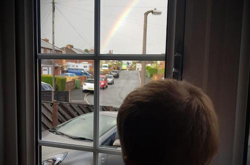

|  |
There are still plenty of Nature-related activities which can be done indoors when the weather doesn't inspire a trip outside. It's a good opportunity for artwork, scientific experiments or talking to children about the world to explore and develop their understanding. |